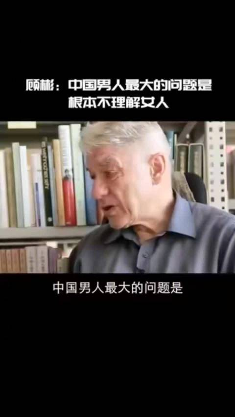

回复@我是二姐夫:不用中国男人这么大的词，就说跟我恋爱和结婚的几个样本吧，我觉得讨厌的还不是他们不懂女人，而是他们自以为很懂。你说出的情绪和话，他们理解不了的时候，就会居高临下地认为你错了。这是直男最让人无语的地方，傻缺偏偏很自信。//@我是二姐夫:你们怎么看呢？@刘文tracy @Ada李力@新浪视频:德国汉学家顾彬：中国男人最大的问题，是他们根本不理解女人，他们根本不知道她们是什么。 新浪视频的微博视频  15万次播放 00:36